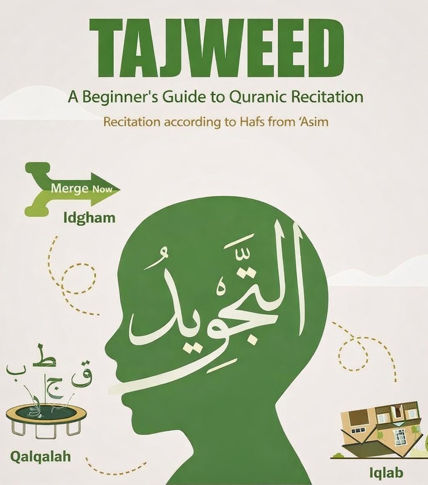

حين يبدأ الطالب تعلم القرآن أونلاين، قد يظن أن المطلوب الأول هو إنهاء الصفحات أو تحسين السرعة فقط. لكن القراءة الصحيحة لا تقوم على السرعة وحدها، بل على أداء الحروف كما ينبغي، وإعطاء الآيات حقها من الترتيل والوضوح. وهنا تأتي أهمية التجويد، لأنه يحفظ ألفاظ القرآن من التحريف، ويعوّد اللسان على النطق السليم.
قال الله تعالى: ورتل القرآن ترتيلًا. وهذا أصل عظيم في باب التلاوة. فالمقصود ليس مجرد القراءة، بل القراءة المتأنية المحكمة. والتجويد يترجم هذا المعنى عمليًا؛ فيعلّم الطالب مخارج الحروف، وصفاتها، وأحكام المد والغنة، وكيفية تجنب الأخطاء التي قد تغير اللفظ أو تُضعف جمال التلاوة.
التجويد يحفظ الدقة
في العربية حروف قد يلتبس بعضها على المبتدئ. وإذا تُرك الطالب يكرر الخطأ دون تصحيح، صار الخطأ عادة، والعادة يصعب كسرها لاحقًا. لذلك فالدراسة مع معلم متقن مهمة جدًا، خصوصًا في الدروس الفردية أونلاين، حيث يسمع المعلم الصوت بوضوح، ويصحح مباشرة، ويعيد التمرين حتى يثبت النطق الصحيح.
التجويد يزيد من تعظيم القرآن
هناك جانب تعبدي أيضًا في التجويد. فالمسلم حين يجتهد في تحسين تلاوته، فهو يُظهر أدبًا مع كلام الله. ليس المطلوب أن يكون كل قارئ صاحب صوت مميز، لكن المطلوب أن يقرأ القرآن بعناية، وبحرص على عدم التهاون في ألفاظه. وهذا المعنى إذا وصل للطفل أو الطالب البالغ، صار التجويد عنده عبادة ورفعة، لا مجرد قواعد جافة.
الدروس الأونلاين نافعة جدًا للتجويد
قد يظن بعض الناس أن التجويد لا ينجح إلا بالحضور المباشر، لكن الواقع أن الدروس الفردية أونلاين يمكن أن تكون قوية جدًا إذا كان فيها إنصات جيد، وخطة مراجعة واضحة، ومعلم يكرر التصحيح بصبر. بل إن بعض الطلاب يستفيدون أونلاين أكثر، لأن المعلم يركّز على صوت واحد، والخطة تكون شخصية، والمتابعة أوضح.
التجويد يبني الثقة
كثير من المتعلمين، خاصة الكبار، يشعرون بالحرج عند القراءة جهريًا. ومع التجويد تبدأ الثقة تتشكل بطريقة صحية؛ ليس لأنها ثقة شكلية، بل لأنها قائمة على معرفة حقيقية وتحسن واضح. ومع الوقت يدرك الطالب أن التلاوة الصحيحة ليست أمرًا بعيدًا، بل ثمرة صبر ومراجعة وتوجيه صحيح.
لهذا فإن التجويد ينبغي أن يكون جزءًا أساسيًا من تعلم القرآن أونلاين، لا أمرًا مؤجلًا إلى مرحلة متأخرة. فالبداية الصحيحة تختصر كثيرًا من التصحيح لاحقًا، وتعين الطالب على قراءة القرآن بأدب، ووضوح، وطمأنينة.